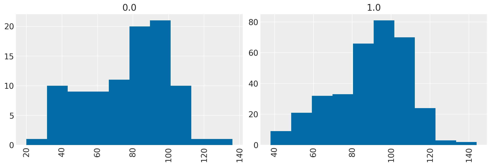
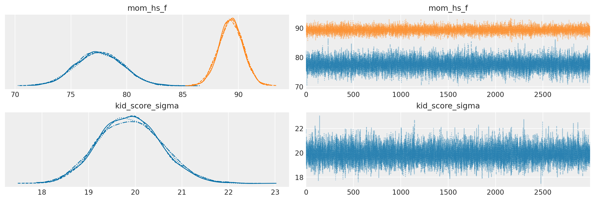
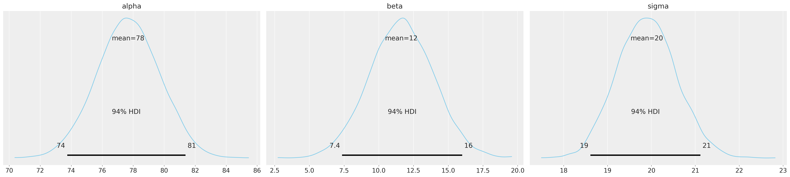

Confronto tra le medie di due gruppi
Contents
41. Confronto tra le medie di due gruppi#
Diverse procedure di inferenza statistica implicano il confronto tra due gruppi. Potremmo essere interessati a sapere se la media di un gruppo è più grande della media di un altro gruppo, o semplicemente se le due medie sono tra loro diverse. La domanda si riferisce ai parametri delle popolazioni da cui i due gruppi sono stati campionati, non alla differenza tra le medie osservate. Per trovare una risposta alla nostra domanda, dunque, abbiamo bisogno di fare ricorso ad un modello statistico, perché le vere differenze sono solitamente offuscate dall’errore di misurazione (o rumore stocastico), il che ci impedisce di trarre conclusioni semplicemente dalle differenze calcolate dai dati osservati.
Lo standard per il confronto statistico tra due (o più) campioni consiste nell’utilizzo di un test statistico. Ciò comporta l’espressione di un’ipotesi nulla, che in genere afferma che non vi è alcuna differenza tra i gruppi, e l’utilizzo di una statistica test scelta per determinare se la distribuzione dei dati osservati è plausibile sotto l’ipotesi nulla. L’ipotesi nulla viene rifiuta quando la statistica del test calcolata sui dati osservati è superiore a un valore soglia prestabilito.
Sfortunatamente, non è facile condurre correttamente un test di ipotesi e i risultati di tali test sono spesso fraintesi. L’impostazione di un test statistico comporta diverse scelte soggettive (ad es. il tipo di test statistico da utilizzare, la specificazione dell’ipotesi nulla da testare, la scelta del livello di significatività) da parte dell’utente che raramente sono giustificate in base al problema, ma piuttosto sono solitamente basate su scelte tradizionali che sono del tutto arbitrare. L’evidenza che fornisce all’utente è indiretta, incompleta e tipicamente soprastima l’evidenza contro l’ipotesi nulla.
Un approccio più informativo ed efficace per confrontare i gruppi è quello basato sulla stima piuttosto che sulla verifica di ipotesi ed è guidato dall’approccio bayesiano piuttosto che da quello frequentista. Cioè, piuttosto che testare se due gruppi sono diversi, ci poniamo invece il problema di stimare di quanto sono diversi, il che è molto più informativo. Inoltre, in tale stima, includiamo una stima dell’incertezza associata a tale differenza, la quale include l’incertezza dovuta alla nostra mancanza di conoscenza sui parametri del modello (incertezza epistemica) e l’incertezza dovuta alla stocasticità intrinseca del sistema (incertezza aleatoria).
41.1. Un esempio illustrativo#
Per illustrare come funziona in pratica l’approccio di stima bayesiana sulla differenza tra le medie di due gruppi, useremo nuovamente i dati kidiq. In questo caso i due gruppi di bambini sono identificati dal livello di scolarità della madre: per un primo gruppo di bambini la madre non ha completato le scuole superiori, per il secondo gruppo la madre ha ottenuto il diploma superiore. Ci chiediamo come sia possibile ottenere una stima (nella popolazione) della differenza tra le medie del quoziente di intelligenza del bambino nei due gruppi. In questo capitolo vedremo come sia possibile usare l’analisi della regressione per rispondere a questa domanda.
import matplotlib.pyplot as plt
import numpy as np
import pandas as pd
import scipy as sc
import statistics
import arviz as az
import bambi as bmb
import pymc as pm
from pymc import HalfNormal, Model, Normal, sample
import warnings
warnings.filterwarnings('ignore')
warnings.simplefilter('ignore')
RANDOM_SEED = 2023
rng = np.random.default_rng(RANDOM_SEED)
%config InlineBackend.figure_format = 'retina'
az.style.use("arviz-darkgrid")
plt.style.use('tableau-colorblind10')
Leggiamo i dati:
kidiq = pd.read_stata('data/kidiq.dta')
kidiq.head()
| kid_score | mom_hs | mom_iq | mom_work | mom_age | |
|---|---|---|---|---|---|
| 0 | 65 | 1.0 | 121.117529 | 4 | 27 |
| 1 | 98 | 1.0 | 89.361882 | 4 | 25 |
| 2 | 85 | 1.0 | 115.443165 | 4 | 27 |
| 3 | 83 | 1.0 | 99.449639 | 3 | 25 |
| 4 | 115 | 1.0 | 92.745710 | 4 | 27 |
kidiq.groupby(['mom_hs']).size()
mom_hs
0.0 93
1.0 341
dtype: int64
Ci sono 93 bambini la cui madre non ha completato le superiori e 341 bambini la cui madre ha ottenuto il diploma di scuola superiore.
summary_stats = [statistics.mean, statistics.stdev]
print(kidiq.groupby(['mom_hs']).aggregate(summary_stats))
kid_score mom_iq mom_work \
mean stdev mean stdev mean stdev
mom_hs
0.0 77.548387 22.573800 91.889152 12.630498 2.322581 1.226175
1.0 89.319648 19.049483 102.212049 14.848414 3.052786 1.120727
mom_age
mean stdev
mom_hs
0.0 21.677419 2.727323
1.0 23.087977 2.617453
I bambini la cui madre ha completato le superiori tendono ad avere un QI maggiore di 11.8 punti rispetto ai bambini la cui madre non ha concluso le superiori.
89.319648 - 77.548387
11.771260999999996
kidiq.hist("kid_score", by="mom_hs", figsize=(12, 4))
array([<AxesSubplot: title={'center': '0.0'}>,
<AxesSubplot: title={'center': '1.0'}>], dtype=object)

Iniziamo la nostra inferenza statistica usando bambi. Per semplicità, ricodifichiamo la variabile che distingue i due gruppi di madri nel modo seguente:
kidiq['mom_hs_f'] = np.where(kidiq['mom_hs'] == 1.0, 'yes', 'no')
kidiq.describe
<bound method NDFrame.describe of kid_score mom_hs mom_iq mom_work mom_age mom_hs_f
0 65 1.0 121.117529 4 27 yes
1 98 1.0 89.361882 4 25 yes
2 85 1.0 115.443165 4 27 yes
3 83 1.0 99.449639 3 25 yes
4 115 1.0 92.745710 4 27 yes
.. ... ... ... ... ... ...
429 94 0.0 84.877412 4 21 no
430 76 1.0 92.990392 4 23 yes
431 50 0.0 94.859708 2 24 no
432 88 1.0 96.856624 2 21 yes
433 70 1.0 91.253336 2 25 yes
[434 rows x 6 columns]>
Scriviamo il modello statistico nel modo seguente:
model = bmb.Model("kid_score ~ 0 + mom_hs_f", kidiq)
La variabile mom_hs_f è una variabile categoriale e verrà trasformata automaticamente da bambi in maniera tale che le stime dei due coefficienti del modello corrisponderanno alle medie dei due gruppi.
idata = model.fit(draws=3000)
Auto-assigning NUTS sampler...
Initializing NUTS using jitter+adapt_diag...
Multiprocess sampling (4 chains in 4 jobs)
NUTS: [kid_score_sigma, mom_hs_f]
---------------------------------------------------------------------------
KeyboardInterrupt Traceback (most recent call last)
Cell In[10], line 1
----> 1 idata = model.fit(draws=3000)
File ~/opt/anaconda3/envs/pymc/lib/python3.10/site-packages/bambi/models.py:300, in Model.fit(self, draws, tune, discard_tuned_samples, omit_offsets, include_mean, inference_method, init, n_init, chains, cores, random_seed, **kwargs)
293 response = self.components[self.response_name]
294 _log.info(
295 "Modeling the probability that %s==%s",
296 response.response_term.name,
297 str(response.response_term.success),
298 )
--> 300 return self.backend.run(
301 draws=draws,
302 tune=tune,
303 discard_tuned_samples=discard_tuned_samples,
304 omit_offsets=omit_offsets,
305 include_mean=include_mean,
306 inference_method=inference_method,
307 init=init,
308 n_init=n_init,
309 chains=chains,
310 cores=cores,
311 random_seed=random_seed,
312 **kwargs,
313 )
File ~/opt/anaconda3/envs/pymc/lib/python3.10/site-packages/bambi/backend/pymc.py:96, in PyMCModel.run(self, draws, tune, discard_tuned_samples, omit_offsets, include_mean, inference_method, init, n_init, chains, cores, random_seed, **kwargs)
94 # NOTE: Methods return different types of objects (idata, approximation, and dictionary)
95 if inference_method in ["mcmc", "nuts_numpyro", "nuts_blackjax"]:
---> 96 result = self._run_mcmc(
97 draws,
98 tune,
99 discard_tuned_samples,
100 omit_offsets,
101 include_mean,
102 init,
103 n_init,
104 chains,
105 cores,
106 random_seed,
107 inference_method,
108 **kwargs,
109 )
110 elif inference_method == "vi":
111 result = self._run_vi(**kwargs)
File ~/opt/anaconda3/envs/pymc/lib/python3.10/site-packages/bambi/backend/pymc.py:172, in PyMCModel._run_mcmc(self, draws, tune, discard_tuned_samples, omit_offsets, include_mean, init, n_init, chains, cores, random_seed, sampler_backend, **kwargs)
170 if sampler_backend == "mcmc":
171 try:
--> 172 idata = pm.sample(
173 draws=draws,
174 tune=tune,
175 discard_tuned_samples=discard_tuned_samples,
176 init=init,
177 n_init=n_init,
178 chains=chains,
179 cores=cores,
180 random_seed=random_seed,
181 **kwargs,
182 )
183 except (RuntimeError, ValueError):
184 if (
185 "ValueError: Mass matrix contains" in traceback.format_exc()
186 and init == "auto"
187 ):
File ~/opt/anaconda3/envs/pymc/lib/python3.10/site-packages/pymc/sampling/mcmc.py:529, in sample(draws, step, init, n_init, initvals, trace, chains, cores, tune, progressbar, model, random_seed, discard_tuned_samples, compute_convergence_checks, callback, jitter_max_retries, return_inferencedata, keep_warning_stat, idata_kwargs, mp_ctx, **kwargs)
527 _print_step_hierarchy(step)
528 try:
--> 529 mtrace = _mp_sample(**sample_args, **parallel_args)
530 except pickle.PickleError:
531 _log.warning("Could not pickle model, sampling singlethreaded.")
File ~/opt/anaconda3/envs/pymc/lib/python3.10/site-packages/pymc/sampling/mcmc.py:1005, in _mp_sample(draws, tune, step, chains, cores, random_seed, start, progressbar, trace, model, callback, discard_tuned_samples, mp_ctx, **kwargs)
992 draws -= tune
994 traces = [
995 _init_trace(
996 expected_length=draws + tune,
(...)
1002 for chain_number in range(chains)
1003 ]
-> 1005 sampler = ps.ParallelSampler(
1006 draws=draws,
1007 tune=tune,
1008 chains=chains,
1009 cores=cores,
1010 seeds=random_seed,
1011 start_points=start,
1012 step_method=step,
1013 progressbar=progressbar,
1014 mp_ctx=mp_ctx,
1015 )
1016 try:
1017 try:
File ~/opt/anaconda3/envs/pymc/lib/python3.10/site-packages/pymc/sampling/parallel.py:403, in ParallelSampler.__init__(self, draws, tune, chains, cores, seeds, start_points, step_method, progressbar, mp_ctx)
400 if mp_ctx.get_start_method() != "fork":
401 step_method_pickled = cloudpickle.dumps(step_method, protocol=-1)
--> 403 self._samplers = [
404 ProcessAdapter(
405 draws,
406 tune,
407 step_method,
408 step_method_pickled,
409 chain,
410 seed,
411 start,
412 mp_ctx,
413 )
414 for chain, seed, start in zip(range(chains), seeds, start_points)
415 ]
417 self._inactive = self._samplers.copy()
418 self._finished: List[ProcessAdapter] = []
File ~/opt/anaconda3/envs/pymc/lib/python3.10/site-packages/pymc/sampling/parallel.py:404, in <listcomp>(.0)
400 if mp_ctx.get_start_method() != "fork":
401 step_method_pickled = cloudpickle.dumps(step_method, protocol=-1)
403 self._samplers = [
--> 404 ProcessAdapter(
405 draws,
406 tune,
407 step_method,
408 step_method_pickled,
409 chain,
410 seed,
411 start,
412 mp_ctx,
413 )
414 for chain, seed, start in zip(range(chains), seeds, start_points)
415 ]
417 self._inactive = self._samplers.copy()
418 self._finished: List[ProcessAdapter] = []
File ~/opt/anaconda3/envs/pymc/lib/python3.10/site-packages/pymc/sampling/parallel.py:259, in ProcessAdapter.__init__(self, draws, tune, step_method, step_method_pickled, chain, seed, start, mp_ctx)
242 step_method_send = step_method
244 self._process = mp_ctx.Process(
245 daemon=True,
246 name=process_name,
(...)
257 ),
258 )
--> 259 self._process.start()
260 # Close the remote pipe, so that we get notified if the other
261 # end is closed.
262 remote_conn.close()
File ~/opt/anaconda3/envs/pymc/lib/python3.10/multiprocessing/process.py:121, in BaseProcess.start(self)
118 assert not _current_process._config.get('daemon'), \
119 'daemonic processes are not allowed to have children'
120 _cleanup()
--> 121 self._popen = self._Popen(self)
122 self._sentinel = self._popen.sentinel
123 # Avoid a refcycle if the target function holds an indirect
124 # reference to the process object (see bpo-30775)
File ~/opt/anaconda3/envs/pymc/lib/python3.10/multiprocessing/context.py:300, in ForkServerProcess._Popen(process_obj)
297 @staticmethod
298 def _Popen(process_obj):
299 from .popen_forkserver import Popen
--> 300 return Popen(process_obj)
File ~/opt/anaconda3/envs/pymc/lib/python3.10/multiprocessing/popen_forkserver.py:35, in Popen.__init__(self, process_obj)
33 def __init__(self, process_obj):
34 self._fds = []
---> 35 super().__init__(process_obj)
File ~/opt/anaconda3/envs/pymc/lib/python3.10/multiprocessing/popen_fork.py:19, in Popen.__init__(self, process_obj)
17 self.returncode = None
18 self.finalizer = None
---> 19 self._launch(process_obj)
File ~/opt/anaconda3/envs/pymc/lib/python3.10/multiprocessing/popen_forkserver.py:58, in Popen._launch(self, process_obj)
55 self.finalizer = util.Finalize(self, util.close_fds,
56 (_parent_w, self.sentinel))
57 with open(w, 'wb', closefd=True) as f:
---> 58 f.write(buf.getbuffer())
59 self.pid = forkserver.read_signed(self.sentinel)
KeyboardInterrupt:
az.plot_trace(idata)
array([[<AxesSubplot: title={'center': 'mom_hs_f'}>,
<AxesSubplot: title={'center': 'mom_hs_f'}>],
[<AxesSubplot: title={'center': 'kid_score_sigma'}>,
<AxesSubplot: title={'center': 'kid_score_sigma'}>]], dtype=object)

az.summary(idata)
| mean | sd | hdi_3% | hdi_97% | mcse_mean | mcse_sd | ess_bulk | ess_tail | r_hat | |
|---|---|---|---|---|---|---|---|---|---|
| mom_hs_f[no] | 77.542 | 2.094 | 73.786 | 81.559 | 0.015 | 0.011 | 18438.0 | 9701.0 | 1.0 |
| mom_hs_f[yes] | 89.328 | 1.084 | 87.305 | 91.365 | 0.008 | 0.006 | 16773.0 | 9715.0 | 1.0 |
| kid_score_sigma | 19.888 | 0.678 | 18.645 | 21.165 | 0.005 | 0.003 | 20328.0 | 9829.0 | 1.0 |
Il parametro associato alla modalità no corrisponde alla media del QI del gruppo dei bambini la cui madre non ha completato le scuole superiori. Il parametro associato alla modalità yes corrisponde alla media del QI del gruppo dei bambini la cui madre ha completato le scuole superiori.
Ai due parametri è associato un intervallo di credibilità. La quantità di sovrapposizione tra i due intervalli ci fornisce una certezza più o meno grande della differenza tra le medie delle due popolazioni. Nel caso presente, per intervalli del 94%, non vi è alcuna sovrapposizione. Per cui, con un livello di certezza del 94% possiamo concludere che il QI dei bambini la cui madre ha completato le superiori tende ad essere maggiore del QI dei bambini la cui madre non ha completato le superiori.
Ripetiamo ora l’analisi usando una parametrizzazione divera. In questo caso useremo PyMC.
Iniziamo ad estrarre le variabili dal DataFrame.
kid_score = kidiq['kid_score']
mom_hs = kidiq['mom_hs']
Specifichiamo ora il modello PyMC.
μ_m = kidiq.kid_score.mean()
μ_s = kidiq.kid_score.std() * 2
with Model() as model:
# Priors
alpha = Normal("alpha", mu=μ_m, sigma=μ_s)
beta = Normal("beta", mu=0, sigma=10)
sigma = pm.HalfCauchy("sigma", beta=20)
# Expected value of outcome
mu = alpha + beta*mom_hs
# Likelihood of observations
Y_obs = pm.Normal("Y_obs", mu=mu, sigma=sigma, observed=kid_score)
Eseguiamo il campionamento.
with model:
trace = pm.sample()
Auto-assigning NUTS sampler...
Initializing NUTS using jitter+adapt_diag...
Multiprocess sampling (4 chains in 4 jobs)
NUTS: [alpha, beta, sigma]
Sampling 4 chains for 1_000 tune and 1_000 draw iterations (4_000 + 4_000 draws total) took 18 seconds.
Esaminiamo i risultati.
az.summary(trace)
| mean | sd | hdi_3% | hdi_97% | mcse_mean | mcse_sd | ess_bulk | ess_tail | r_hat | |
|---|---|---|---|---|---|---|---|---|---|
| alpha | 78.138 | 2.000 | 74.398 | 81.769 | 0.048 | 0.034 | 1726.0 | 1850.0 | 1.0 |
| beta | 11.047 | 2.243 | 6.743 | 15.111 | 0.055 | 0.039 | 1691.0 | 2056.0 | 1.0 |
| sigma | 19.868 | 0.675 | 18.595 | 21.109 | 0.014 | 0.010 | 2330.0 | 2143.0 | 1.0 |
In questo caso, abbiamo specificato un modello di regressione con la forma seguente:
La variabile \(X\) assume il valore 0 per il primo gruppo. Per quel gruppo, dunque, il modello si riduce a
Il parametro \(\alpha\) corrisponde dunque alla media di kid_score per il gruppo codificato con mom_hs = 0.
Per il secondo gruppo, con mom_hs = 1, il modello diventa
Il \(\mathbb{E}(Y)\) è la media del secondo gruppo. Dato che \(\alpha\) corrisponde alla media di kid_score per il primo gruppo, questo significa che \(\beta\) corrisponde alla differenza tra le medie dei due gruppi.
77.539 + 11.767
89.306
L’incertezza a proposito della differenza tra le medie dei due gruppi (ovvero, l’incertezza associata al parametro \(\beta\)) rappresenta l’oggetto del nostro interesse. Pertanto, l’intervallo di credibilità associato al parametro \(\beta\) è la risposta alla domanda che ci eravamo posti: ci sono evidenze convincenti che le medie dei due gruppi sono diverse? Se l’intervallo di credibilità non include lo 0 (il che significa che non vi è differenza tra i due gruppi) allora, al livello di credibilità prescelto, possiamo concludere che le due medie sono diverse.
41.2. Dimensione dell’effetto#
La dimensione dell’effetto (effect size) è una misura della forza dell’associazione osservata, ovvero della grandezza della differenza tra i gruppi attesa che include l’incertezza sui dati. L’indice maggiormente usato per quantificare la dimensione dell’effetto è l’indice \(d\) di Cohen. Nel caso di due medie abbiamo:
laddove
e la varianza di ciascun gruppo è calcolata come
Solitamente, l’indice \(d\) di Cohen si interpreta usando la metrica seguente:
Dimensione dell’effetto |
\(d\) |
|---|---|
Very small |
0.01 |
Small |
0.20 |
Medim |
0.50 |
Large |
0.80 |
Very large |
1.20 |
Huge |
2.0 |
Per una trattazione bayesiana (in un caso più complesso del presente) della stima della dimensione dell’effetto, si veda [Kru14].
μ_m = kidiq.kid_score.mean()
μ_s = kidiq.kid_score.std() * 2
with Model() as model_ef:
# Define priors
alpha = Normal("alpha", mu=μ_m, sigma=μ_s)
beta = Normal("beta", mu=0, sigma=30)
sigma = pm.HalfCauchy("sigma", beta=20)
# Expected value of outcome
mu = alpha + beta*mom_hs
# Likelihood of observations
Y_obs = pm.Normal("Y_obs", mu=mu, sigma=sigma, observed=kid_score)
effect_size = pm.Deterministic("effect_size", beta/sigma)
trace_ef = pm.sample(2000, return_inferencedata=True)
Auto-assigning NUTS sampler...
Initializing NUTS using jitter+adapt_diag...
Multiprocess sampling (4 chains in 4 jobs)
NUTS: [alpha, beta, sigma]
Sampling 4 chains for 1_000 tune and 2_000 draw iterations (4_000 + 8_000 draws total) took 21 seconds.
az.plot_posterior(
trace_ef,
var_names=["alpha", "beta", "sigma"],
color="#87ceeb",
)
array([<AxesSubplot: title={'center': 'alpha'}>,
<AxesSubplot: title={'center': 'beta'}>,
<AxesSubplot: title={'center': 'sigma'}>], dtype=object)

az.plot_posterior(
trace_ef,
ref_val=0,
var_names=["effect_size"],
color="#87ceeb",
)
<AxesSubplot: title={'center': 'effect_size'}>

az.summary(trace_ef)
| mean | sd | hdi_3% | hdi_97% | mcse_mean | mcse_sd | ess_bulk | ess_tail | r_hat | |
|---|---|---|---|---|---|---|---|---|---|
| alpha | 77.674 | 2.037 | 73.742 | 81.374 | 0.035 | 0.025 | 3323.0 | 3648.0 | 1.0 |
| beta | 11.615 | 2.311 | 7.358 | 16.007 | 0.040 | 0.029 | 3260.0 | 3696.0 | 1.0 |
| sigma | 19.893 | 0.675 | 18.611 | 21.118 | 0.010 | 0.007 | 4987.0 | 4822.0 | 1.0 |
| effect_size | 0.585 | 0.118 | 0.361 | 0.802 | 0.002 | 0.001 | 3336.0 | 3928.0 | 1.0 |
Possiamo dunque concludere che, per ciò che concerne l’effetto della scolarità della madre sul quoziente di intelligenza del bambino, la dimensione dell’effetto è “media”.
%load_ext watermark
%watermark -n -u -v -iv -w
Last updated: Wed Jan 04 2023
Python implementation: CPython
Python version : 3.8.15
IPython version : 8.7.0
arviz : 0.14.0
scipy : 1.9.3
bambi : 0.9.2
pymc : 5.0.0
matplotlib: 3.6.2
numpy : 1.24.0
sys : 3.8.15 (default, Nov 24 2022, 09:04:07)
[Clang 14.0.6 ]
pandas : 1.5.2
Watermark: 2.3.1